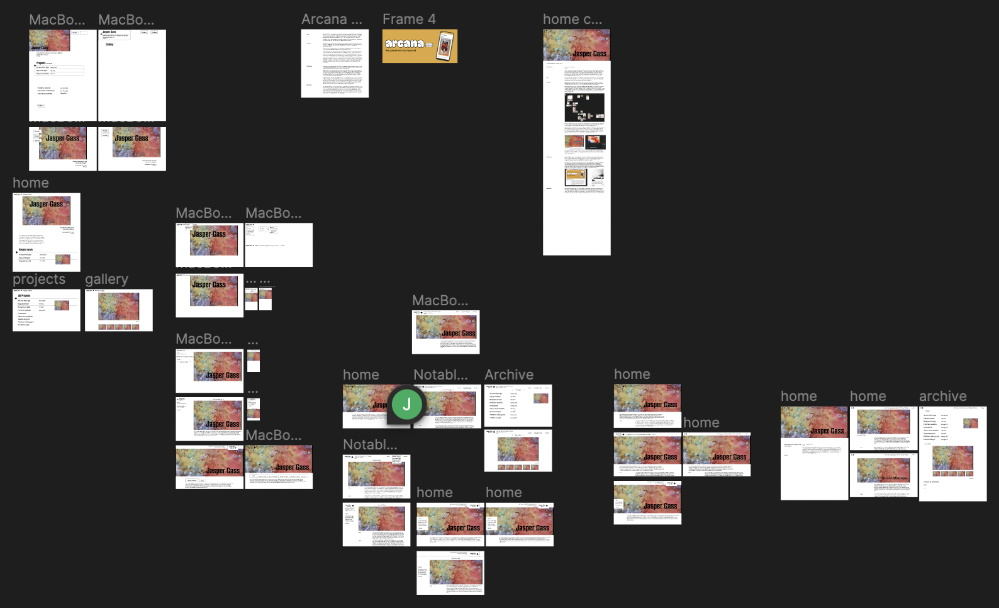

Jasper Gass
Interface designer and web developer
Portfolio Website
Summer 2023
About
I am a 3rd year design student at the School of Interactive Art and Technology at SFU with an intense curiosity and passion for experience and analysis. As humans, experience is everything–it is our senses that allow us to find meaning in the world around us and understanding within ourselves. Even the smallest interactions we have can have lasting and meaningful impacts. As a designer, I hope to create beautiful interfaces and experiences that people can find pleasure in, down to the smallest details, because it’s the little things that count.
contact: jaspergass@outlook.com
Introduction
This website was developed over the course of 2 months. I made a portfolio in Fall 2022 but felt that it needed to be improved (to see that project, click here). My goal with this project was to improve the visual style of my site, and to include an archive to view my past works and photography.
Process
I drew a lot of inspiration for this site from Locomotive; a Montreal based design agency that I admire a lot. I also knew I wanted to re-do a video project I did in high school that used milk, food colouring, soap, and oil to create an abstract montage for my home page.
I began by creating many mockups in Figma, quickly iterating through different ideas for menu systems and content layouts to explore my options. I ultimately decided that many of my ideas were overly complex; I wanted something simple, refined, and easy to understand. Thats why I chose this very simple navigation system and structure for all my pages. To make my site stand out, the visual complexity of the video and the home page text effects balance out the simplicity of the website’s structure.
In order to make my cursor have a unique shape and mixed blend mode effect through CSS, it needed to be an actual object on the page instead of the normal cursor. To achieve this, I hid the real cursor and created an object on the page that moves using javascript and applied the blend mode.
The video component to my home page was key to the site’s character. While prototyping, I used a clip of old footage from high school that I took on a camcorder. I didn’t want to use this footage for my site because the visual style from the camcorder is too rough for the clean and modern style I was aiming for. I filmed new footage on my XXXX camera. Below is what the site looked like using the placeholder footage, and what it looked like when I was editing the new clips in Adobe Premiere.

I also used Git to save my progress. I didn’t run into any issues in development that required reverting the project to previous versions, but it was still good practice to make sure that none of my work got lost and was easily traceable.
Challenges
I spent a long time trying to get the site as responsive as possible. To catch any errors, I had several friends test the website to get their feedback and find any flaws. Some key instances of responsiveness are my text sizes which grow and shrink using a calculation based on the viewport size and the navigation bar that condenses into a menu button at smaller resolutions.
I also spent a long time getting my photo gallery on the archive page to work. I modified someone’s code from CodePen, so that I could change out the collection of images being displayed to showcase my different photography collections. This took several hours of troubleshooting to modify and make responsive. I am unfamiliar with the component it uses, called a vue gallery, but after spending some time to understand the code I managed to make it do what I wanted. In the future, I would love to make my own from scratch to improve my coding skills and get the exact behaviour I want.

Reflection
After finishing this project, I feel very accomplished. I achieved what I set out to do and learned a lot in the process. I have a much greater understanding of javascript for websites. This updated portfolio is a much better representation of me and my skills. Unfortunately, I am sure that within a few months of developing my skills further at school I will feel like this site is outdated again. I hope that because this one is more robust than my first I can continue to update it as I develop my skills.